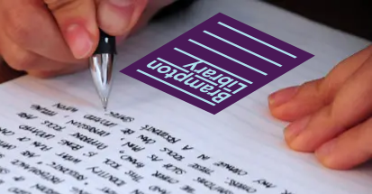

BRAMPTON LIBRARY
WRITERS MEETING
No. 251112
Dear
Connoisseurs of Sentences
OUR NEXT MEETING
is, as scheduled, on
Wednesday, November 12
at 2 p.m.
in the Program Room at Four Corners
Hope to see you there.
Reply in the affirmative if you'll be with us.
Writers will provide a copy of their work for you to follow along as they read. And you will know how many copies of your own work to print for them.
mark blair
👇From Ani Colekessian:
■ that David C. Downing's On writing (and writers): A miscellany of advice and opinions from C.S. Lewis
has some really good gems and is a fun read. The book is in our Library.
From Michael Joll:
■ Building your story
■ Ending your novel
■ that Bookbaby, though it's for profit, many of its helpful articles are free.
■ his most recent book, Outside The Wire: And Other Stories
From Lynn Marie Caissie:
■ Writing prompts
From Sandy Nielsen:
■ James Crumley's Unofficial rules for writing
■ Ray Bradbury's Greatest writing advice
■ Annie Dillard’s Write as if you were dying
■ Kurt Vonnegut’s Greatest writing advice
■ that on the Library's PressReader page are several magazines on writing that can be read online or downloaded, even back issues. They deal with self-editing, critiquing, and one where you choose an author you admire as an imaginary mentor
■ that Josh Brolin's memoir, From Under a Truck, is the most informative, and most uninformative, the clearest and most obscure. (And his force-of-nature mom was one of Clint Eastwood's many mistresses.)
If you've not written anything, that's ok.
Come share your thoughts with us. You can also share a piece of writing from any book or the internet. Tell us what you find interesting about it and/or why you think it well written.
We read. We listen. We talk.
However, keep in mind we're not a barbershop but a writing group. We meet to help each other write better: with correct punctuation and grammar; and more effective vocabulary, composition and literary style. Conversation may be spontaneous but good writing is a WORK of art.